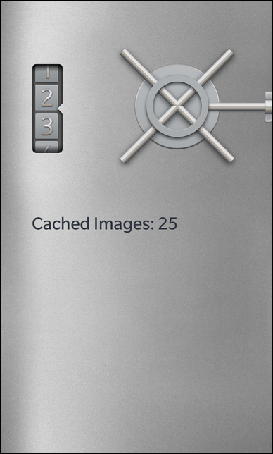

Files:
The Contiguous Cache example shows how to use QContiguousCache to manage memory usage for very large models.

In some environments memory is limited and, even when it isn't, users still dislike an application using excessive memory. Using QContiguousCache to manage a list, rather than loading the entire list into memory, allows the application to limit the amount of memory it uses, regardless of the size of the data set it accesses
The simplest way to use QContiguousCache is to cache as items are requested. When a view requests an item at row N it is also likely to ask for items at rows near to N.
QVariant ImageModel::data(const QVariantList &indexPath) { if (indexPath.isEmpty()) return QVariant(); // Extract the requested row from the index path const int row = indexPath.first().toInt(); // Store the current number of cached items const int oldCachedItemCount = m_rows.count(); if (row > m_rows.lastIndex()) { // If a row after the last valid index in cache is requested ... if (row - m_rows.lastIndex() > lookAhead) { // ... and the distance is larger than the look ahead ... // ... fill the cache with values around the requested row cacheRows(row-halfLookAhead, qMin(m_count, row+halfLookAhead)); } else { // ... otherwise append new values to the cache until the requested row is reached while (row > m_rows.lastIndex()) { m_rows.append(fetchRow(m_rows.lastIndex()+1)); } } } else if (row < m_rows.firstIndex()) { // If a row before the first valid index in cache is requested ... if (m_rows.firstIndex() - row > lookAhead) { // ... and the distance is larger than the look ahead ... // ... fill the cache with values around the requested row cacheRows(qMax(0, row-halfLookAhead), row+halfLookAhead); } else { // ... otherwise prepend new values to the cache until the requested row is reached while (row < m_rows.firstIndex()) { m_rows.prepend(fetchRow(m_rows.firstIndex()-1)); } } } // If the number of cached item has changed, emit the signal if (oldCachedItemCount != m_rows.count()) emit cachedItemCountChanged(); // Return the Image object for the requested row return QVariant::fromValue(m_rows.at(row)); } void ImageModel::cacheRows(int from, int to) const { /** * We simply fill the cache with new values for the given range, where the * construction of the new values is encapsulated in the fetchRow() method. */ for (int i = from; i <= to; ++i) m_rows.insert(i, fetchRow(i)); }
After getting the row, the class determines if the row is in the bounds of the contiguous cache's current range. It would have been equally valid to simply have the following code instead.
while (row > m_rows.lastIndex()) m_rows.append(fetchWord(m_rows.lastIndex()+1); while (row < m_rows.firstIndex()) m_rows.prepend(fetchWord(m_rows.firstIndex()-1);
However a list will often jump rows if the scroll bar is used directly, resulting in the code above causing every row between the old and new rows to be fetched.
Using QContiguousCache::lastIndex() and QContiguousCache::firstIndex() allows the example to determine what part of the list the cache is currently caching. These values don't represent the indexes into the cache's own memory, but rather a virtual infinite array that the cache represents.
By using QContiguousCache::append() and QContiguousCache::prepend() the code ensures that items that may be still on the screen are not lost when the requested row has not moved far from the current cache range. QContiguousCache::insert() can potentially remove more than one item from the cache as QContiguousCache does not allow for gaps. If your cache needs to quickly jump back and forth between rows with significant gaps between them consider using QCache instead.
And thats it. A perfectly reasonable cache, using minimal memory for a very large list.
Image ImageModel::fetchRow(int position) const { Q_UNUSED(position); return Image(QUrl(QString::fromLatin1("asset:///images/text%1.png").arg(position%10))); }